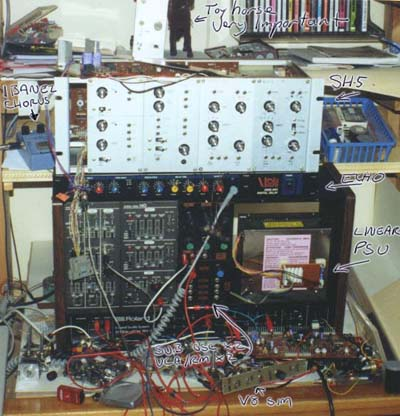

|

With the discovery of the Synth D.I.Y. Mailing list, the synth was retrieved from storage, and stripped and reassembled. Apart from a general cleanup, the 100M received only minor work, one switch having gone high impedance. Already partly converted, the SH5 had all pots replaced, and a case fashioned for it in pine. The power supply was moved into the case, instead of it hanging off the back. The ETI 4600 MkII power supply was removed from another rack unit when the form factor was abandoned. It is built into the computer power supply case visible inside the 100M. Article, art & design copyright 1999 by Ken Stone
|